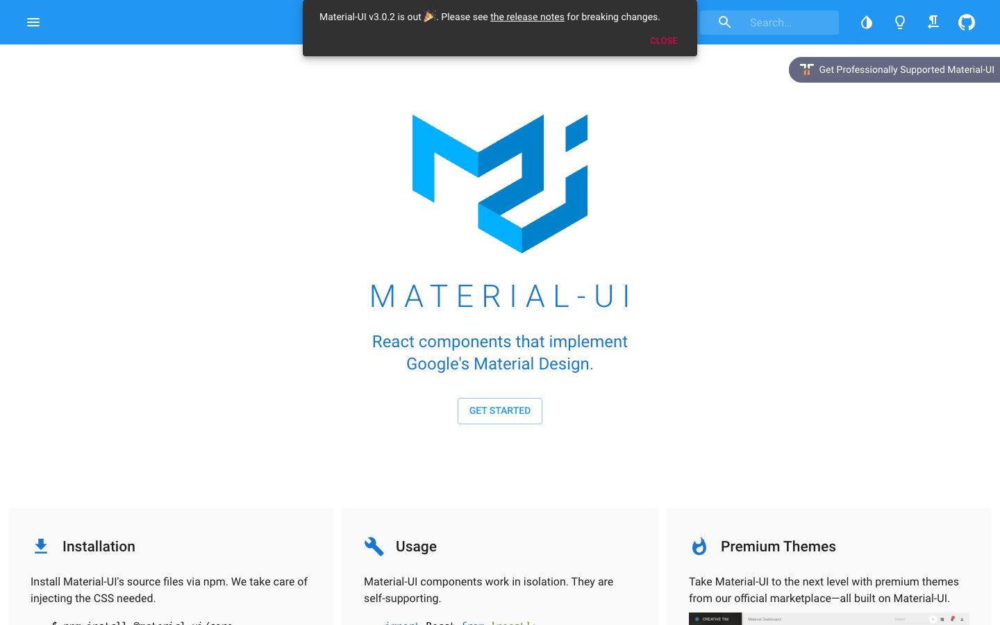

References / Website / 250
Material-UI website, 2018
The 2018 home page of Material-UI, the React library for Material Design, with a blue app bar and a dark snackbar announcing version 3.
- Source
- material-ui.com (now mui.com) (archived copy)
- Creator
- Material-UI (now MUI)
- Made
- 2018
- Style
- Material Design (agent-proposed, not yet reviewed by a person)
- Moods
- Clean, bright
- Evidence
- Captured with
tools/capture.mjs(headless Chrome, 1440 × 900) on 28 September 2026 and inspected. The screenshot shows the first viewport; the measurement covers up to four screens. - Reviewed
- Rights
- Third-party work, stored with credit for commentary. License: unverified. Rights policy
The project is now MUI at mui.com, with a different design.
Observed
- A bright blue app bar spans the top with a menu glyph, a translucent search field, and white icons.
- A dark gray snackbar overlaps the app bar with the text “Material-UI v3.0.2 is out” and a pink all-capital CLOSE action. It casts a soft shadow.
- A large blue logo of folded ribbons forms an M and a U. Below it, MATERIAL-UI is set in thin, widely spaced blue capitals, with the line “React components that implement Google’s Material Design.”
- A GET STARTED button has a thin blue outline and blue all-capital text. Three light gray panels, Installation, Usage, and Premium Themes, have blue icons and no shadows.
- A gray pill on the right edge reads “Get Professionally Supported Material-UI”.
Why it belongs
The page measures a shadow on 10 % of its boxes, with a median blur of 18 px and offset of 6 px from the snackbar and the app bar. The chromatic share is 0.08. The panels are flat light gray, so most boxes have no shadow.
Borrow
Announce news in a dark snackbar with one all-capital accent action, instead of a colored banner.
Measured
Machine-extracted by tools/extract-traits.js on . Full measurement.
- Type families
- Roboto (71%), Consolas (29%)
- Type scale ratio
- 1.32
- Median radius
- 0 px
- Mean chroma
- 0.06
- Palette
- #ffffff 77%
- #000000 10%
- #313131 3%
- #2196f3 3%
- #0077aa 3%
- #669900 1%
- #1976d2 1%
- #e10050 1%

